Topic: CL236

| CLICK Example for Productivity Series PLC |
Topic: CL236
|
In all the I/O Messaging examples below, we are utilizing the EDS file that can be exported from the CLICK EtherNet/IP Adapter setup, but this is not required. In the Productivity Suite software, you can create a Generic Device and use the parameters outlined in the EtherNet/IP Overview topic of the CLICK help file. Using this information in conjunction with the examples below should provide the required information for successful connection.
In this example, we will create only 1 user block of memory for Inputs and 1 user block of memory for Outputs in the CLICK EtherNet/IP Adapter setup to read from and write to in the Productivity P1-540 PLC.
CLICK Setup:
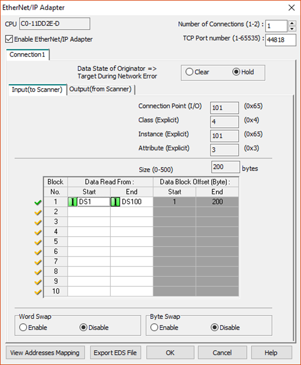
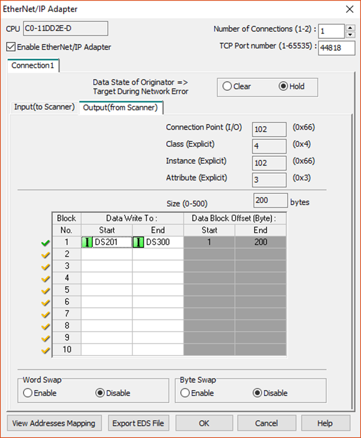
Click the Export EDS File button after configuring the CLICK EtherNet/IP Adapter setup and save the file to a location it can be accessed by the Productivity Suite software.
Use the EDS import tool in the Productivity Suite software to add the CLICK EDS file. This can be accomplished within the Hardware Configuration window under the EnterNet/IP tab on the right-hand side.
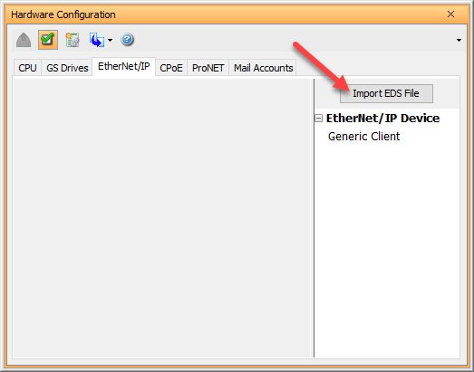

|
Note: You will see an error when importing the EDS file. The Productivity Series PLCs don't support Input Only connections, so this will not be an available connection. The other connections will work fine. |
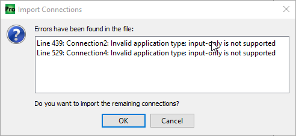
The CLICK PLC now appears in the EtherNet/IP Device list.
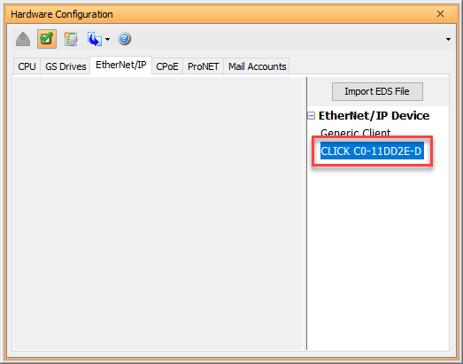
Double-click on the CLICK device that was added to access and edit the connection properties. Fill in the CLICK PLC IP address, any Device Name and status item tags desired. Select Use Structure and enter a structure name to expedite the process. This will fill in the status item tags for you.
Click the + button to choose the type of connection you want to create.
You should see a list of connections found in the EDS file. Select Add ‘Connection1 Exclusive Owner’ Message.
If you configured two connections in the CLICK EtherNet/IP Adapter setup, you would see a second Exclusive Owner option available.
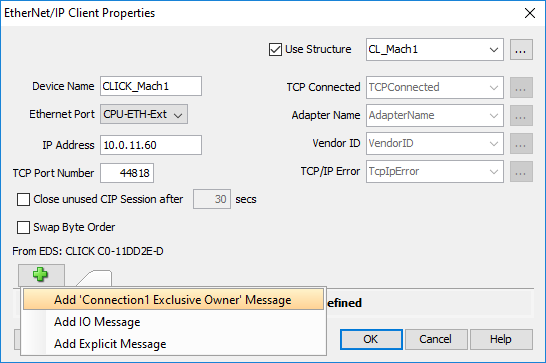
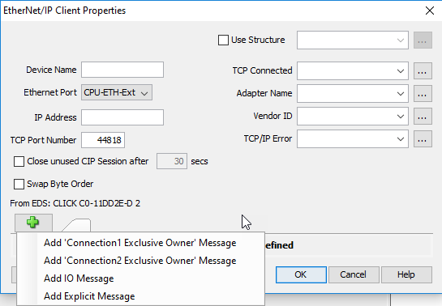
There are three tabs to configure for each connection: T->O (INPUT), O->T (OUTPUT) and CONFIG DATA.
For the T->O (INPUT) tab, create an array that is of the same data type of the CLICK PLC and matches the size configured for the CLICK PLC. In our example, we used the DS data type of 100 elements, so we would choose an array of Integer, 16-bit (Unsigned or Signed depending upon the application).
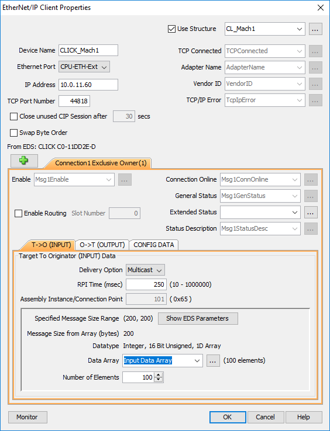
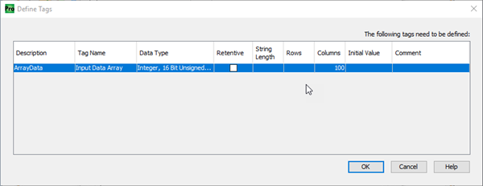
Click on the O->T (OUTPUT) tab and create an Output array and the correct size to match the CLICK EtherNet/IP Adapter setup similar to what is shown below:
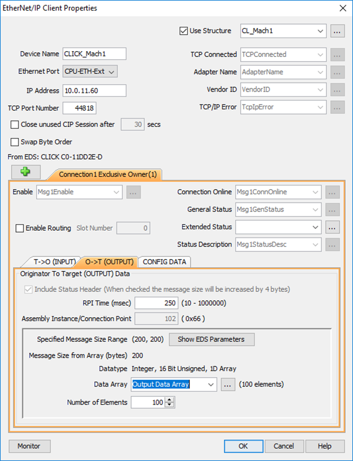
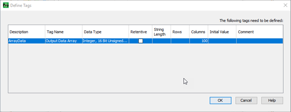
On the CONFIG DATA tab, the CLICK PLC does not require Configuration data, nor does it need the Configuration path in the setup. Therefore, it can be left disabled as shown below:
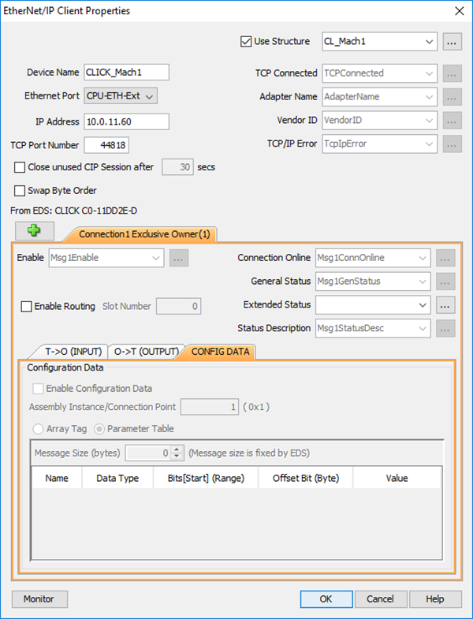
Click OK. The EtherNet/IP setup is now complete and can be transferred to the PLC.
To easily view and write data from the P1-540 to the CLICK PLC, you can add a Data View pre-filled with tags for the CLICK_Mach1 EtherNet/IP device setup.
Open the device by double clicking it. Click the Monitor button at the bottom to open the Data View.
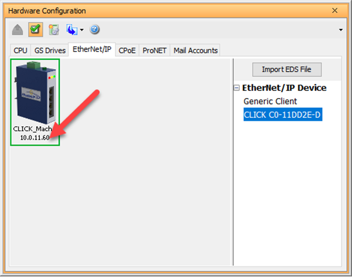
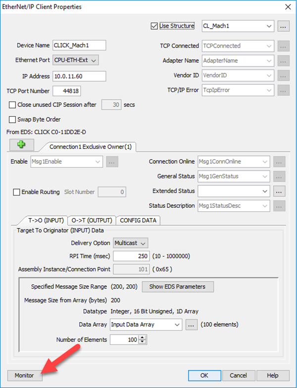
You can click OK to proceed with a default name for the Data View or edit the name at this point.
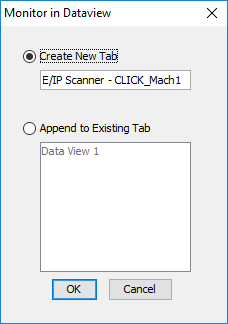
A tab with the name above has now been added to the Data View. Open the Data View window and the tags’ current values can be viewed or edited.
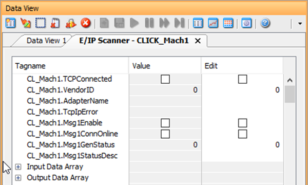
Expand the arrays to view the data within them. Turn on CL_Mach1.Msg1Enable, and you can see the values match the values in the CLICK PLC (shown in the CLICK Programming Software data view below).
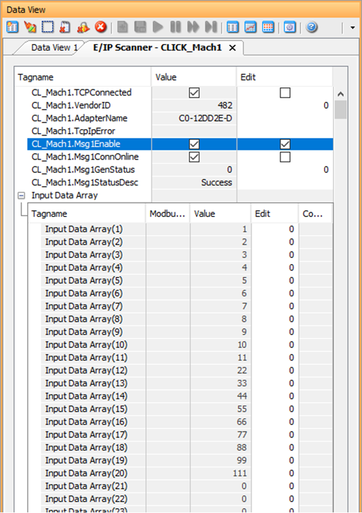
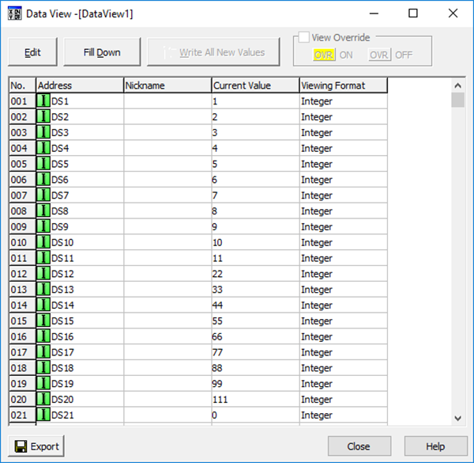
Expand the Output Array and values can be written to the Output tags of the CLICK PLC by changing the values in the array in the Edit column.
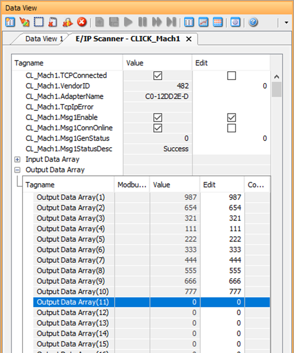
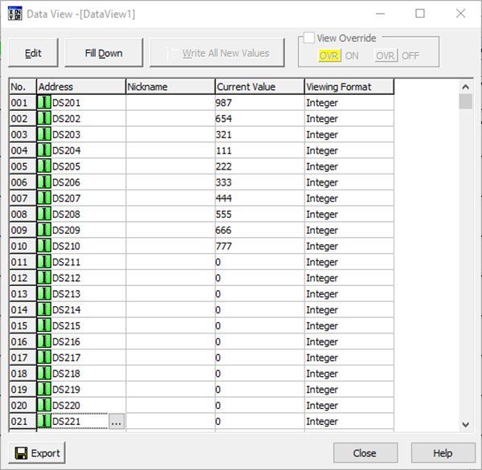
For communicating to CLICK with EtherNet/IP Explicit Messaging no EDS file import is required but you will still need to add a device in the Hardware Configuration.
There are two ways to accomplish Explicit Messaging from the P1-540 to the CLICK PLC: Unconnected or Class 3 Connected. With Unconnected, a message is sent only once upon enabling of the EMSG instruction. To send again, disable the EMSG instruction and re-enable again.
With Class 3 Connected, the messages go out at the RPI rate specified automatically when the EMSG instruction is enabled. This consumes a connection and is more resource intensive. If using multiple Productivity Series PLCs to 1 CLICK PLC, this method should not be used.
For Unconnected and Connected Messaging, once the CLICK EtherNet/IP Adapter setup is completed and Data Blocks are created, you need to create the Device in the Hardware Configuration Generic Client. Double-click Generic Client to open the EtherNet/IP client Properties dialog.
Refer to the I/O Messaging Example above for creating the Device in the Hardware Configuration.
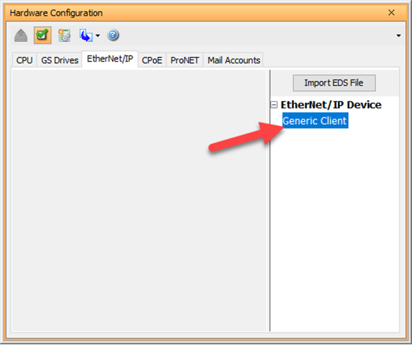
Fill in the CLICK PLC IP address, any Device Name and status item tags desired. Select Use Structure and enter a structure name to expediate the process. This will fill in the status item tags for you.
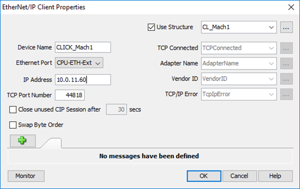
Add an EMSG instruction to the PLC ladder logic. In the EtherNet/IP Explicit Message (EMSG) dialog, select Unconnected MSG in the Connection field and Assy:Get SingleAttribute in the Service field. Fill in the other fields as shown. Select Use Structure and enter a structure name to expedite the process of entering Status tags. This will fill in the status item tags for you.
In T->O(INPUT) create an array that is of the same data type of the CLICK PLC and matches the size configured for the CLICK PLC. In our example, we used the DS data type of 100 elements, so we would choose an array of Integer, 16-bit (Unsigned or Signed depending upon the application). Make sure Number of Elements matches the array size.
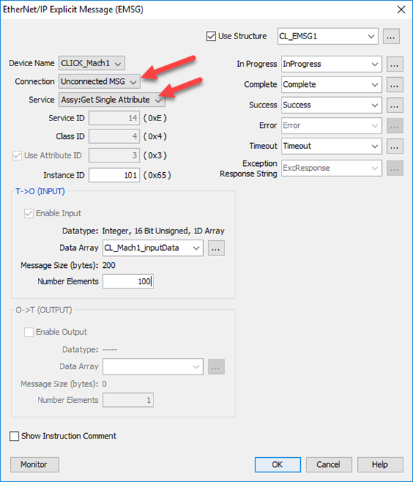
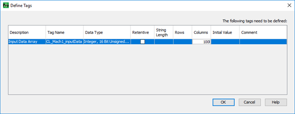
Add an EMSG instruction to the PLC ladder logic. In the EtherNet/IP Explicit Message (EMSG) dialog, select Unconnected MSG in the Connection field and Assy:Set SingleAttribute in the Service field. Fill in the other fields as shown. Select Use Structure and enter a structure name to expedite the process of entering Status tags. This will fill in the status item tags for you.
In T->O(INPUT) create an array that is of the same data type of the CLICK PLC and matches the size configured for the CLICK PLC. In our example, we used the DS data type of 100 elements, so we would choose an array of Integer, 16-bit (Unsigned or Signed depending upon the application). Make sure Number of Elements matches the array size.
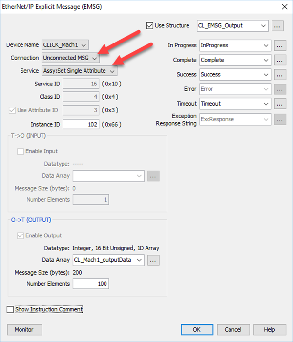
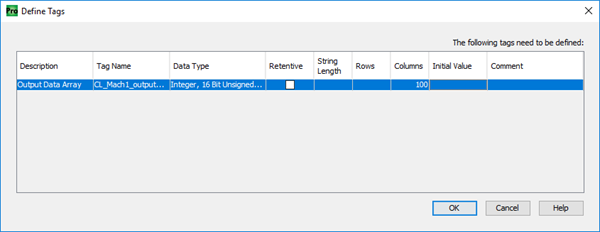
For Connected Messaging, in the EtherNet/IP Client Properties dialog, click the + and select Explicit Message. Note the Connection name MSG1(EXP).
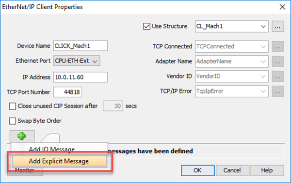
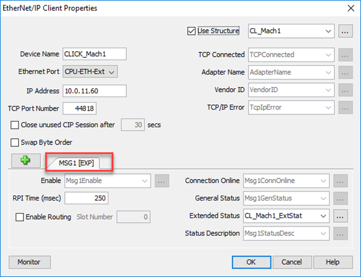
A separate EMSG instruction is needed for each data block and for Input Data and Output data. Consult the EtherNet/IP Overview topic in the CLICK Help file to find all the possible parameters required for each Connection type.
Add an EMSG instruction to the PLC ladder logic. In the EtherNet/IP Explicit Message (EMSG) dialog, select the name of the Explicit Message connection created in the Device in the Connection field and Assy:Get Single Attribute in the Service field. Fill in the other fields as shown. Select Use Structure and enter a structure name to expedite the process of entering Status tags. This will fill in the status item tags for you.
In T->O(INPUT) create an array that is of the same data type of the CLICK PLC and matches the size configured for the CLICK PLC. In our example, we used the DS data type of 100 elements, so we would choose an array of Integer, 16-bit (Unsigned or Signed depending upon the application). Make sure Number of Elements matches the array size.
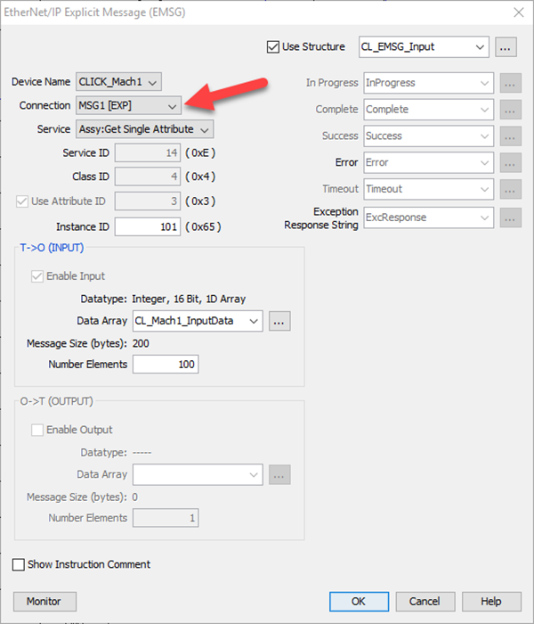
Add an EMSG instruction to the PLC ladder logic. In the EtherNet/IP Explicit Message (EMSG) dialog, select the name of the Explicit Message connection created in the Device in the Connection field and Assy:Set Single Attribute in the Service field. Fill in the other fields as shown. Select Use Structure and enter a structure name to expedite the process of entering Status tags. This will fill in the status item tags for you.
In O->T(OUTPUT) create an array that is of the same data type of the CLICK PLC and matches the size configured for the CLICK PLC. In our example, we used the DS data type of 100 elements, so we would choose an array of Integer, 16-bit (Unsigned or Signed depending upon the application). Make sure Number of Elements matches the array size.
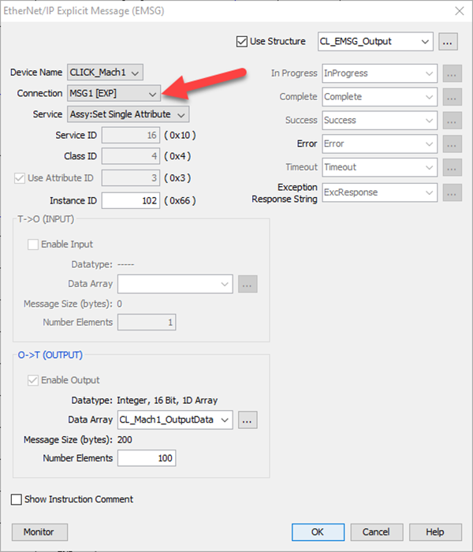
CLICK Example for AB CompactLogix
CLICK Example for the Do-more PLC
General & Extended Status EtherNet/IP Error Codes